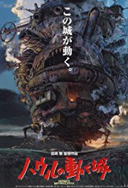
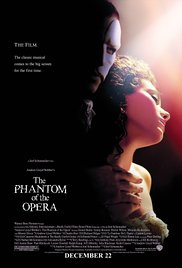

Adventure
Family
Fantasy
Mystery
Horror
Musical
Thriller
Adventure
Family
Fantasy
Musical
Romance
Thriller
My father has recently retired from the military, so I've lived in many places while growing up. I was born on July 12, 1996 in Landstuhl, Germany. Since then I have lived in Wiesbaden, Germany; Elpaso, Texas; Forthood, Texas;
Fort Campbell, Kentucky; Aberdeen, Maryland; and now Middleriver, Maryland. I've stayed in each location for about 2 years and in between each stay there were visits back to Middleriver to see cousins and other family members.
During all that travel I took a liking to computers and gaming since I couldn't make many friends. That interest has stayed with me through high school so I decided to study IT at CCBC to get my Associate of Applied Science degree(2017).
I plan to continue my studies at Stevenson and obtain a Bachelors degree in Computer Information Systems. I hope to use this degree to find a comfortable technology oriented job that suits me, I'm not sure what that will be yet,
but I know that right now I enjoy front-end web development. Anything out there that deals with IT and the Web I'm sure I can learn and become familiar with it.
Degree Sought: Bachelor of Computer Information Systems (May 2020)
| Spirited Away(2001) | Sweeney Todd: The Demon Barber of Fleet Street(2007) | Howl's Moving Castle(2004) | The Phantom of the Opera(2004) |
|
 |  | |
| Animation Adventure Family Fantasy Mystery |
Drama Horror Musical Thriller |
Animation Adventure Family Fantasy |
Drama Musical Romance Thriller |